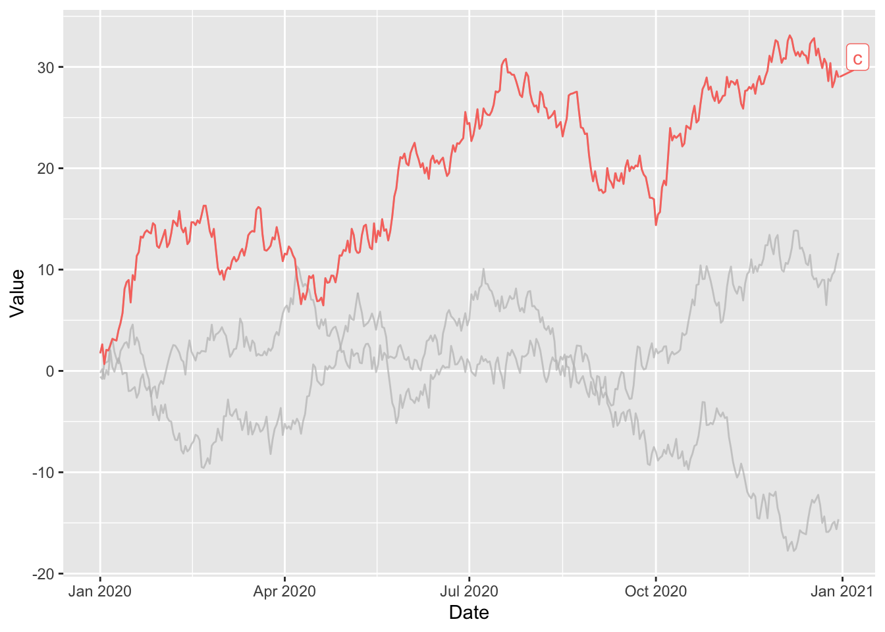
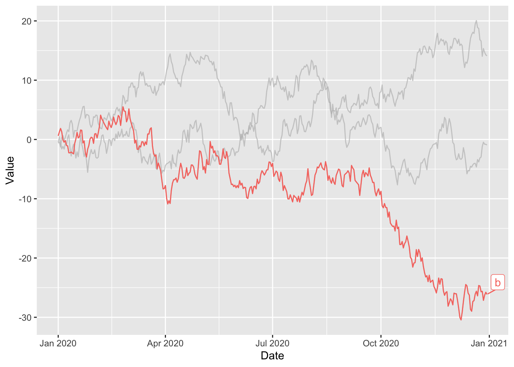
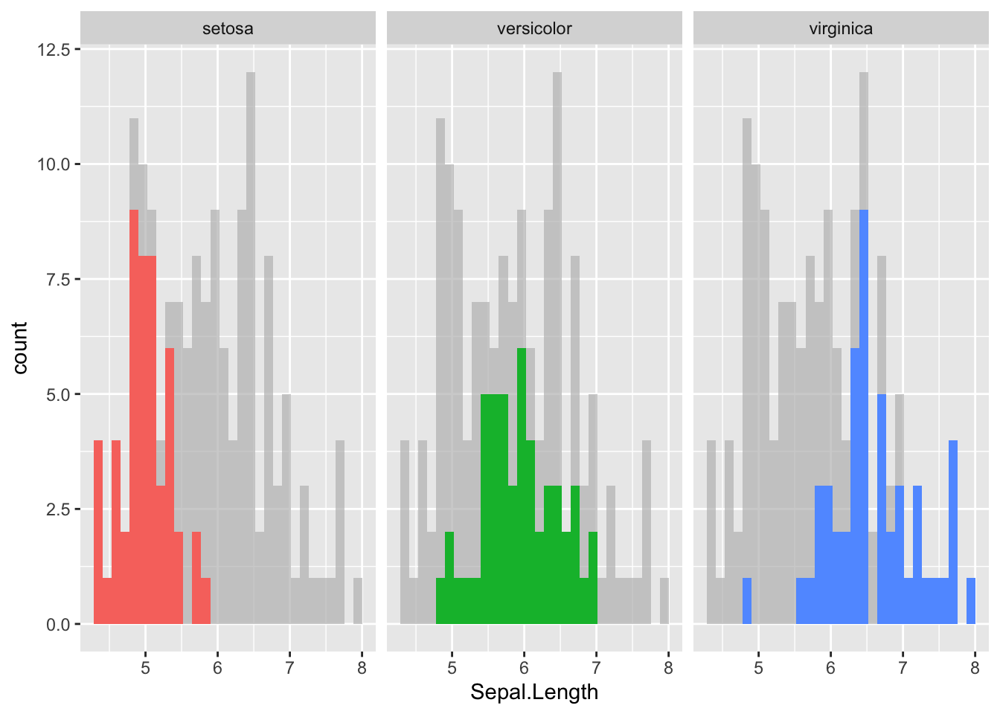
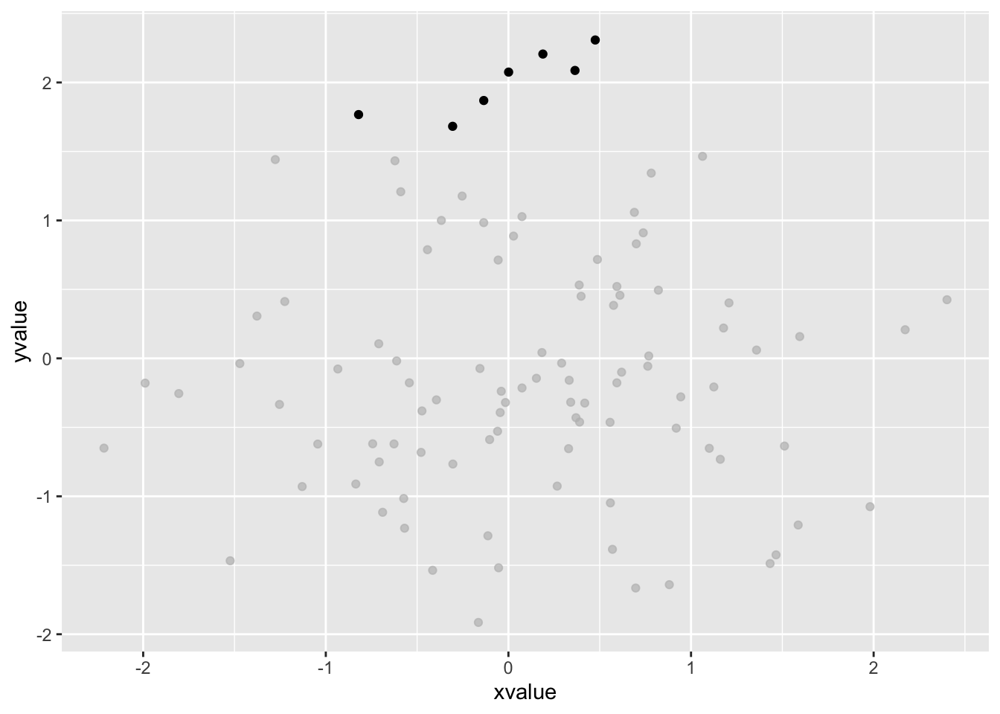
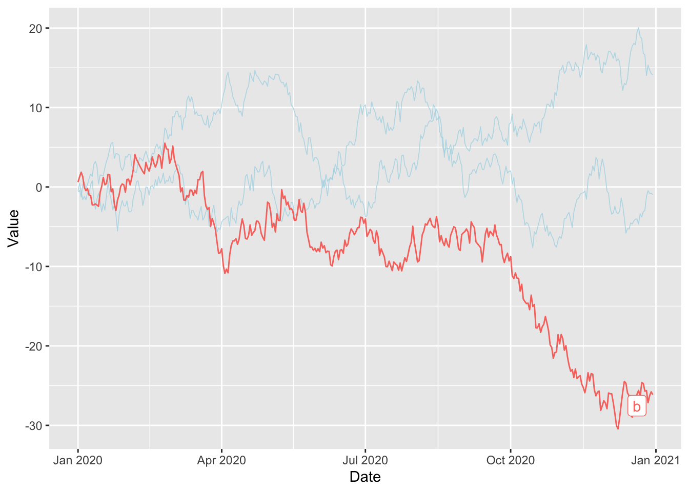

Quick start
The gghighlight package in R is an extension of the ggplot2
package, designed to simplify the process of
highlighting elements.
It mainly offers a gghighlight() function that
highlights geoms.
✍️ author → Hiroaki Yutani
📘 documentation → github
⭐️ more than 500 stars on github

Installation
To get started with gghighlight, you can install it
directly from CRAN using the install.packages function:
Basic usage
The gghighlight package allows you to showcase specific
elements in your ggplot2 charts.
Here’s a basic example on a line charts with multiple lines:
library(ggplot2)
library(gghighlight)
# dataset with 3 lines named "a", "b" and "c"
set.seed(1)
period = 365
df = data.frame(Date = seq(as.Date("2020-01-01"),
by = "day",
length.out = period),
Value = c(cumsum(rnorm(period)),
cumsum(rnorm(period)),
cumsum(rnorm(period))),
Type = c(rep("a", period),
rep("b", period),
rep("c", period)))
ggplot(df) +
geom_line(aes(Date, Value, colour = Type)) +
gghighlight(min(Value) < -15)
Key features
→ Highlight a histogram with multiple groups
Use a facetted version with facet_wrap(~ Species) and
the gghighlight feature allow us to showcase distribution of each group
while maintaining the background distributions for
other variables.
Example:
library(ggplot2)
library(gghighlight)
# load the iris dataset
data(iris)
# show distribution of Sepal.Length of each species
ggplot(iris, aes(Sepal.Length, fill = Species)) +
geom_histogram() +
gghighlight() + facet_wrap(~ Species)
→ Highlight points in a scatter plot
You can highlight specific points by indicating the properties of the points in question.
Example:
library(ggplot2)
library(gghighlight)
# create dataset
set.seed(1)
df_scatter = data.frame(xvalue = rnorm(n = 100),
yvalue = rnorm(n = 100))
# show distribution of Sepal.Length of each species
ggplot(df_scatter, aes(xvalue, yvalue)) +
geom_point() +
gghighlight(yvalue > 1.5, xvalue < 1)
→ Specify properties of unhighlighted
You can define the style of elements outside your filters using the
unhighlighted_params argument.
Example:
library(ggplot2)
library(gghighlight)
ggplot(df) +
geom_line(aes(Date, Value, colour = Type)) +
gghighlight(min(Value) < -15,
unhighlighted_params = list(linewidth = 0.3,
colour = alpha("lightblue", 0.8)))